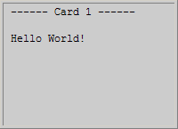
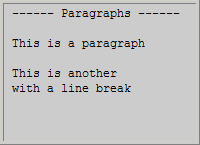
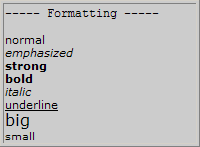
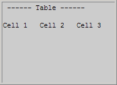

WML 格式化
Deck 和 Card
WML 页面通常称为 "deck"。每个 deck 含有一系列的 card。card 元素可包含文本、标记、链接、输入字段、task、图像等等。卡片之间通过链接彼此相互联系。
当从移动电话访问一张 WML 页面时，页面中的所有卡片都会从 WAP 服务器下载下来。卡片之间的导航是通过电话的计算机完成的 - 在电话内部 - 不需要对服务器的额外访问：
<?xml version="1.0"?> <!DOCTYPE wml PUBLIC "-//WAPFORUM//DTD WML 1.1//EN" "http://www.wapforum.org/DTD/wml_1.1.xml"> <wml> <card id="no1" title="Card 1"> <p>Hello World!</p> </card> <card id="no2" title="Card 2"> <p>Welcome to our WAP Tutorial!</p> </card> </wml>
在您的移动电话显示屏上，结果应该类似这样 (请注意每次只显示一个 card）：
段落和换行
可以编写显示段落和换行的 WML 卡片：
<?xml version="1.0"?> <!DOCTYPE wml PUBLIC "-//WAPFORUM//DTD WML 1.1//EN" "http://www.wapforum.org/DTD/wml_1.1.xml"> <wml> <card title="Paragraphs"> <p> This is a paragraph </p> <p> This is another<br/>with a line break </p> </card> </wml>
在您的移动电话显示屏上，结果应该类似这样：
文本格式化
可以编写显示格式化文本的 WML 卡片：
<?xml version="1.0"?> <!DOCTYPE wml PUBLIC "-//WAPFORUM//DTD WML 1.1//EN" "http://www.wapforum.org/DTD/wml_1.1.xml"> <wml> <card title="Formatting"> <p> normal<br/> <em>emphasized</em><br/> <strong>strong</strong><br/> <b>bold</b><br/> <i>italic</i><br/> <u>underline</u><br/> <big>big</big><br/> <small>small</small> </p> </card> </wml>
在您的移动电话显示屏上，结果应该类似这样 (不要认为所有格式化标签都会按照预期的效果呈现）：
表格
可以编写显示表格的 WML 卡片：
<?xml version="1.0"?> <!DOCTYPE wml PUBLIC "-//WAPFORUM//DTD WML 1.1//EN" "http://www.wapforum.org/DTD/wml_1.1.xml"> <wml> <card title="Table"> <p> <table columns="3"> <tr> <td>Cell 1</td> <td>Cell 2</td> <td>Cell 3</td> </tr> </table> </p> </card> </wml>
在您的移动电话显示屏上，结果应该类似这样：
